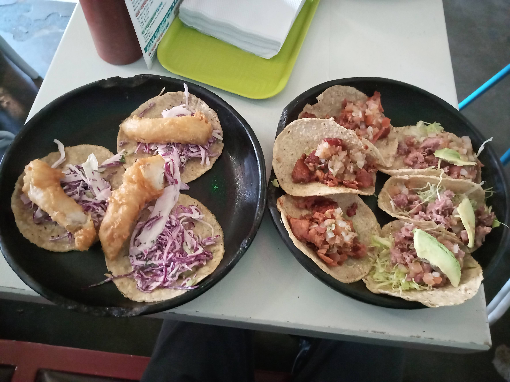
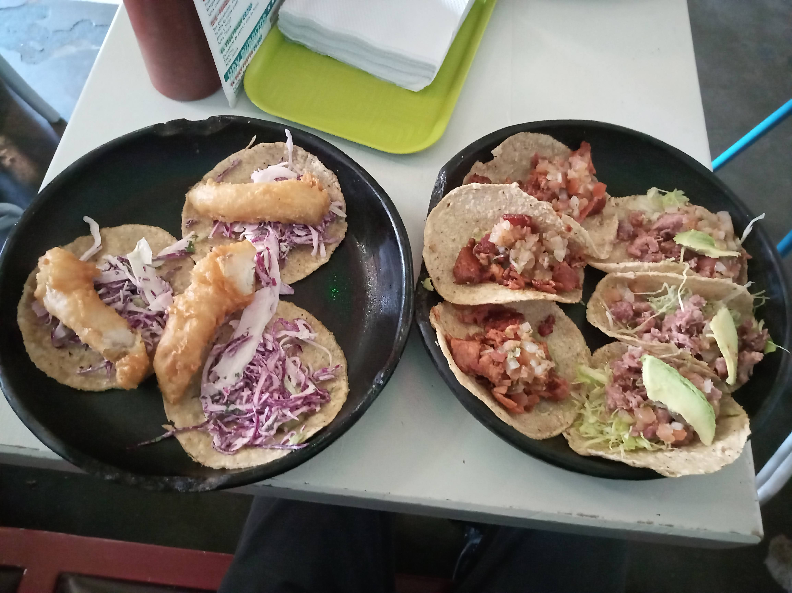
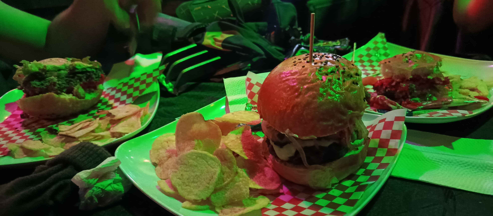
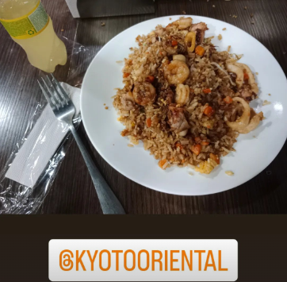
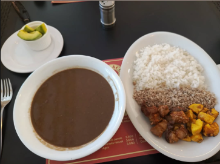

🌮 Los mejores tacos de la ciudad
Exploramos los restaurantes con los mejores tacos , en esta ocasión el Mexican con su all you can eat a solo $38.900 por dos horas. Los encuentras co nsedes por toda la ciudad.
Recomendaciones gastronómicas a excelentes precios ,porque también hay que cuidar el bolsillo.
Exploramos los restaurantes con los mejores tacos , en esta ocasión el Mexican con su all you can eat a solo $38.900 por dos horas. Los encuentras co nsedes por toda la ciudad.
Ozzy Company tiene hamburguesas mejores que muchas de burger master, desde la clásica a 24.000 hasta la de temporada de $32.000.En la 64 con boyaca esta la iconica sede de Ozzy.
Kyoto Oriental es la mejor opción si buscas Arroz o pasta al Wok por un buen precio. desde 15.000 lo coicnan al frente tuyo , ubicado en el centro comercial salitre plaza.
En cuanto a comida colombiana esta ajiaco y frijoles con platos grandisimos por solo 24.000 pesos que perfectamente alcanzan parados personas, a menos que comas demasiado.
